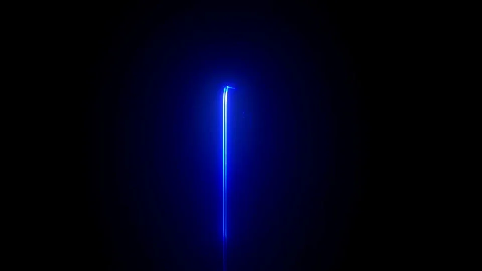
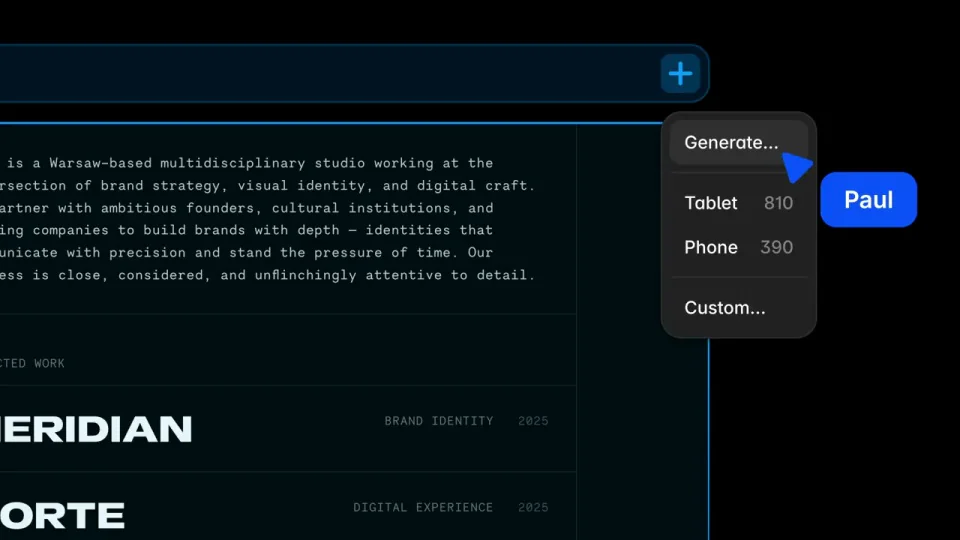
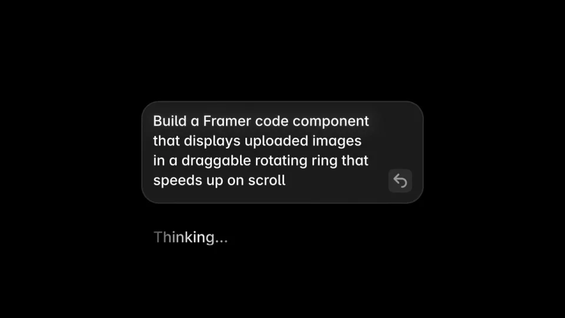
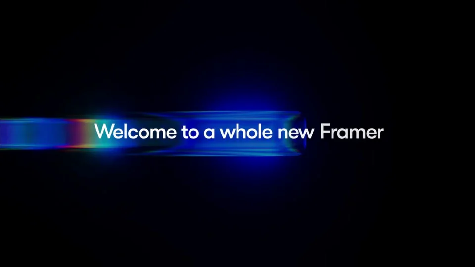
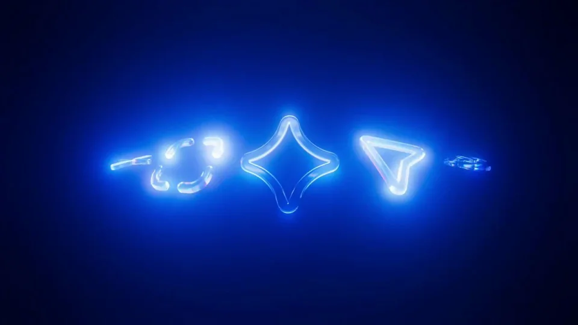

Framer / V301
Framer 3.0｜品牌与产品发布
开场光线引出分支和发布操作，中段放具体编辑结果，后段再把界面语言抽象成玻璃符号。蓝色既是选中状态，也是全片材质线索。
构图与编排 可播放 · 可替换内容
整体编排规则示例
查看 HTML 源码
<!doctype html><html lang="zh-CN"><meta charset="utf-8"><meta name="viewport" content="width=device-width,initial-scale=1"><title>Framer 3.0｜品牌与产品发布 · sequence</title><style>html,body{margin:0;width:100%;height:100%;overflow:hidden;background:#03050a}canvas{display:block;width:100%;height:100%;object-fit:contain}</style><body data-mode="sequence"><canvas width="1000" height="600"></canvas><script src="data.js"></script><script src="common.js"></script><script src="scene.js"></script><script src="bridge.js"></script></body></html>画面元素蓝色光线产品工作区协作光标响应式页面组件样例界面矩阵玻璃符号
MOTION LANGUAGE
动作与构图
局部动作 · 构图规则
01
用同一种蓝光连接功能与品牌
开场光线引出分支和发布操作，中段放具体编辑结果，后段再把界面语言抽象成玻璃符号。蓝色既是选中状态，也是全片材质线索。
02
每段只突出一个变化
编辑区按内容修改、协作、响应式、代码组件、CMS 的次序推进。镜头先给局部操作，再拉远看结果；多个页面同时出现时保持等宽对齐。
03
组件段允许更密集的切换
组件段允许更密集的切换规则示例
查看 HTML 源码
<!doctype html><html lang="zh-CN"><meta charset="utf-8"><meta name="viewport" content="width=device-width,initial-scale=1"><title>Framer 3.0｜品牌与产品发布 · sequence</title><style>html,body{margin:0;width:100%;height:100%;overflow:hidden;background:#03050a}canvas{display:block;width:100%;height:100%;object-fit:contain}</style><body data-mode="clip" data-start="33" data-end="38"><canvas width="1000" height="600"></canvas><script src="data.js"></script><script src="common.js"></script><script src="scene.js"></script><script src="bridge.js"></script></body></html>照片轮盘、粒子球、图片拖尾、字词滚筒和网格画廊在黑色舞台里快速更换。外框与展示范围保持固定，让变化集中在内部。
04
用材质段承担最终情绪
发布宣言居中，蓝色玻璃折射在其后流过，最后压缩为明亮标志。替换主题时同时替换功能顺序和末段短句，继续使用同一强调色。
SEQUENCE
段落与节奏
点击段落，定位到上方编排示意。





画面参考 · 离散静帧
KEEP THE RELATIONSHIPS
制作其他主题
- 保持由功能细节走向产品全貌再到品牌宣言的结构。
制作约束
蓝色光线 / 产品工作区 / 协作光标 / 响应式页面 / 组件样例 / 界面矩阵 / 玻璃符号
- 开场光线引出分支和发布操作，中段放具体编辑结果，后段再把界面语言抽象成玻璃符号。蓝色既是选中状态，也是全片材质线索。
- 编辑区按内容修改、协作、响应式、代码组件、CMS 的次序推进。镜头先给局部操作，再拉远看结果；多个页面同时出现时保持等宽对齐。
- 照片轮盘、粒子球、图片拖尾、字词滚筒和网格画廊在黑色舞台里快速更换。外框与展示范围保持固定，让变化集中在内部。